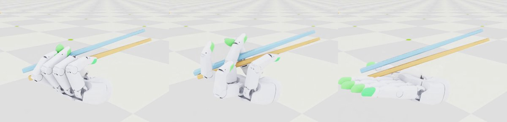

1. 现在做到哪（2026-11-27）
- START 筷子，仿真里手心朝上，能握住两根。筷子朝向已定：横跨手指，筷尖朝小指外侧、往上翘（用户 2026-11-27 确认）。
- 下筷基本不动（每次开合下筷筷尖移动 3.3 mm），开合主要靠上筷（84% 的开合里上筷占间隙变化的 80% 以上）。
- 512 个环境里 459 个 60 秒不掉；握姿不动、不加策略也有 458，所以不掉主要靠握姿。
- 但基本没打开：目标在 0 和 30 mm 之间切换时，实际间隙只在约 10–28 mm 之间（合上中位 10.3 mm，张开中位 27.6 mm）。
- 只训了老师（能看到筷子位姿），没训学生，没上真手。
正在做 / 下一步
- 把目标改成“开 / 关”两个状态，练到能熟练切换（正在仿真里做）。
- 手换朝向后掉不掉；训练时随机化手的朝向。
- 用 Franka 带着手从桌上把筷子拿起来（单独的子任务，排队中）。
- 打印一对 START。第一次打印在第 3–4 层失败：防滑槽把第一层切成了几十个小块；已改设计。
2. 筷子
设计了 7 种，都是 240 mm 长，握持端粗、筷尖细。现在只用 START：握持段扁方 14×9 mm、带防滑横槽，筷尖平头 8×5 mm、带横纹。设计文件在 Hand 仓库 prints/chopsticks/。

| 名字 | 握持段截面 | 筷尖 | 打印估重 | 想验证什么 |
|---|---|---|---|---|
| STD 标准中式 | 方 7×7，全长匀速收锥 | 圆 Ø4 | 5.8 g | 基准：这只手用普通筷子差在哪 |
| SQ9 | 方 9×9 | 圆 Ø4 | 9.8 g | 粗细第 2 档（约日式粗筷） |
| SQ12 | 方 12×12 | 圆 Ø4 | 14.1 g | 粗细第 3 档（指尖宽的 83%） |
| SQ15 | 方 15×15 | 圆 Ø4 | 18.9 g | 粗细上限（和指尖一样宽） |
| RD9 | 圆 Ø9 | 圆 Ø4 | 8.3 g | 和 SQ9 只差形状：方截面防滚有多大用 |
| FLAT | 扁 14×6 | 扁 6×3 | 10.9 g | 宽面约等于指尖宽，指腹整面贴住、不滚 |
| START 入门款 | 扁方 14×9，带防滑横槽 | 平头 8×5，带横纹 | 14.1 g | 最好拿的起步款 |
尺寸单位 mm。估重按 PLA、3 圈墙 + 15% 填充算，误差约 ±20%。第一轮对 STD、SQ12、FLAT、START 做过全随机摆放的握姿搜索，成功率都只有 0.07–0.12%。手的食指指尖宽 14.4 mm；虎口 31–38 mm，比任何一种筷子都粗，没法像人那样用虎口托住下筷（推断）。
3. 现在的做法
- 任务：手固定、掌心朝上（同转圆柱）；两根自由刚体筷子；策略每 50 ms 给 22 个关节的目标角。目标是筷尖间隙 0–40 mm，每 2–4 秒换一次，20% 的目标是 0（合上）。间隙 = 两个筷尖中心的距离 − 筷尖厚度（START 5 mm）。
- 筷子朝向（固定）：横跨手指，筷尖朝小指外侧、往掌面上方翘、略朝手腕；从用户在 playstation 存的“筷子”手型反推，开局只在 ±3 mm / ±3° 内抖。握点离握持端 80 mm，两根近乎平行、握点相距 19 mm，开局筷尖间隙 15 mm；宽面朝开合方向。另外两个候选朝向搜得少，握姿只有 9 个和 0 个。
- 握姿：筷子钉在上面的朝向，只搜手指；要求 2 秒后握点偏 < 8 mm、方向偏 < 8°，并且拿走上筷后下筷单独也稳（6 个方向各推 1.5 倍自重）。约 34 万次得到 1910 个，都是同一家族：下筷被拇指 + 中指 + 小指夹住（76%），上筷被拇指 + 中指（52%）或再加食指（44%）夹住。和用户摆的手型不一样。
- 重力：从 0.05 加到 10 m/s²，掉得少就加一档（+0.1），4260 万步加满。
- 掉落：任一根重心离开局 > 60 mm 或下降 > 40 mm、间隙 > 100 mm、下筷筷尖离开局 > 50 mm 都算掉；一局最长 20 秒。

奖励
| 项 | 管什么 | 权重 | 怎么算 |
|---|---|---|---|
| 存活 | 没掉就有 | +1.0 | 每步 1 |
| 跟踪间隙 | 筷尖间隙跟上目标；下筷动了就拿不到 | +2.0（粗） +1.0（精） | 误差 8 mm / 2 mm 时得 0.37；再乘“下筷筷尖没动”的系数（动 10 mm 时 0.37） |
| 下筷不动 | 下筷筷尖、握点、朝向都保持开局 | +1.5 / +0.75 / +0.75 | 筷尖动 5 mm、握点动 3 mm、转 4° 时各得 0.37 |
| 上筷绕握点转 | 上筷不整根平移 | +0.5 | 握点动 6 mm 时得 0.37 |
| 不偏出开合平面 | 两根不左右剪开 | +0.75 | 偏 5 mm 时得 0.37 |
| 前后错开、交叉 | 两个筷尖别一前一后，两根别交叉 | −0.5 / −0.5 | 错开 30 mm 封顶 |
| 偏离握姿 | 关节别离开局握姿太远 | −0.05 | 22 个关节偏差的平方和 |
| 筷子速度、力矩、功 | 筷子别晃，手省力 | −0.3 / −0.1 / −0.5 | — |
每步算一次，加分项满分 0–1。掉了不另扣分，只是拿不到后面的分；所以“不动”类要求都写成加分，避免每步回报变负（v2 回报变负后学会了早掉）。
4. 训练记录
第一轮（v1–v3）筷子位置随机、大致顺着手指伸出（和现在的朝向差约 150°），不像在夹东西；开合时两根一起动（每次开合下筷筷尖动 20.4 mm）。所以第二轮（v4）固定了朝向，奖励要求下筷不动。第一轮四种筷子里 SQ12 最好学；学生比老师差一个量级，因为第一轮的握姿大多碰不到指尖触觉垫，学生看不到筷子。
| 筷子 | 类型 | 版本 | 重力 m/s² | 步数 | 局数 | 用时 | 末段回报 | 60 秒不掉 （共 512） | 间隙误差 mm 中位 / 平均 | 误差 2 mm 内 | 目标 0 时 间隙中位 | 0↔30 mm 切换 合上 / 张开中位 | 每次开合 下筷筷尖移动 | 备注 |
|---|---|---|---|---|---|---|---|---|---|---|---|---|---|---|
| START | 老师 | v1 | 2.0 | 0.81 亿 | 523,665 | 44 分钟 | 326 | 没评估 | 没评估 | 没评估 | 没评估 | 没测 | 没测 | 没采用：重力课程门槛太严，重力一直停在 2.0 |
| START | 老师 | v2 | 2.0 | 0.33 亿 | 1,774,057 | 18 分钟 | 最低 −66 | 没评估 | 没评估 | 没评估 | 没评估 | 没测 | 没测 | 没采用：从 v1 续训，每步回报变负，局长从约 220 步掉到 15–32 步（推断早掉反而亏得少） |
| START | 老师 | v3 | 4.0 → 9.81 | 2.00 亿 | 703,737 | 101 分钟 | 499 | 303 | 1.72 / 7.40 | 51% | 12.8 mm | 15.1 / 29.9 mm | 20.4 mm | 第一轮采用的版本 |
| STD | 老师 | v3 | 4.0 → 9.81 | 0.66 亿 | 288,830 | 35 分钟 | 453 | 294 | 3.22 / 8.29 | 43% | 7.2 mm | 没测 | 没测 | 同 START v3 |
| SQ12 | 老师 | v3 | 4.0 → 9.81 | 0.66 亿 | 237,397 | 31 分钟 | 894 | 356 | 0.40 / 1.97 | 82% | 1.4 mm | 没测 | 没测 | 同 START v3；第一轮最好 |
| FLAT | 老师 | v3 | 4.0 → 9.81 | 0.66 亿 | 299,240 | 38 分钟 | 452 | 267 | 6.16 / 10.72 | 37% | 17.5 mm | 没测 | 没测 | 同 START v3；第一轮最差 |
| SQ12 | 学生 | v3 | 9.81 | 1.00 亿 | 276,482 | 约 46 分钟 | 601 | 227 | 4.48 / 6.64 | 25% | 7.1 mm | 没测 | 没测 | 看不到筷子：只有关节角 + 指尖触觉 + 目标 |
| START | 老师 | v4 | 0.05 → 10.0 | 1.10 亿 | 381,535 | 56 分钟 | 约 950 | 459 | 5.60 / 8.31 | 33% | 9.9 mm | 10.3 / 27.6 mm | 3.3 mm | 第二轮，现在的做法（第 3 节） |
评估：512 个环境 × 60 秒，正常重力，随机化全开；间隙误差只算目标已保持 1 秒以上的步。v1–v3 于 2026-11-26 评估，v4 和 START v3 的最后两列于 2026-11-27。所有训练：16384 个环境，RTX 5090；随机化为手的 PD 刚度、阻尼 ×0.5–2，摩擦 ×0.7–1.5，关节噪声 ±0.02 rad，触觉增益 ×0.4–2.5；筷子摩擦 0.5–0.8，质量 ×0.8–1.25，重心沿长度 ±5 mm，随机外力。
5. 没解决的
- 打不开：v4 目标 30 mm 时张开中位 27.6 mm，随机目标下目标 ≥ 30 mm 时只有 24.4 mm。推断原因（没验证）：跟踪分被“下筷不动”的系数压低；握得紧，留给上筷的余量小；训练没到头。
- 合不拢：两轮目标 0 时间隙都在 10 mm 上下（START v3 12.8 mm，v4 9.9 mm）。
- 握姿只有一个家族：1910 个握姿都是同一种夹法，和用户摆的手型不一样。
- 只在手心朝上验证过：这个朝向下筷尖朝斜上方，夹不到面前或下方的东西。
- 怎么把筷子放进手里：已定走 Franka 带着手从桌上拿起来，还没开始。
- 仿真简化：筷子质量按打印估重（±20%）、当刚体算；手外壳摩擦按 0.1 算，没测过。
6. 文献：机器人和仿真工作
前 5 篇是筷子本身，后 4 篇是紧邻方向（多指手用镊子 / 夹子等开合工具、把筷子当考题的基准和综述）。9 篇都在文献库里，前 5 篇和 POMDAR 带细标签“用筷子”。
| 年份 | 文章 | 路线 | 手 / 硬件 | 方法 | 真机 / 仿真 | 感知 | 做到什么（原文数字） | 代码 / 数据 |
|---|---|---|---|---|---|---|---|---|
| 2020 | TeleChop（IROS 2020） Telemanipulation with Chopsticks: Analyzing Human Factors in User Demonstrations |
筷子装在臂上，当 1 自由度夹爪 | 自制 6 自由度臂，末端一对电动筷子：一根固定，一根装在电机轴上，同一平面开合 | 遥操作：人拿贴了动捕标记的筷子，臂跟着动；25 人用户研究 | 真机 | OptiTrack 11 台相机跟踪人手里的筷子；没有触觉和力反馈 | 25 人 × 5 种物体（泡沫、薯片、螺母、铅笔、14 mm 玻璃球）× 3 种方式（普通筷子、动捕筷子、遥操作）× 3 次；遥操作在 3/5 种物体上成功率最高；各物体成功率只在图里，没列数字 | 原文没给 |
| 2020 | Grasping with Chopsticks（ICRA 2021） Grasping with Chopsticks: Combating Covariate Shift in Model-free Imitation Learning for Fine Manipulation |
筷子装在臂上，当 1 自由度夹爪 | 同组的 6 自由度臂 + 1 自由度电动筷子 | 模仿学习：每种物体 500 条遥操作示范；行为克隆 + 最近邻集成，换到物体坐标系、加噪声造纠偏标签 | 真机 | 物体位置靠外部跟踪 + 臂末端位姿；没有触觉 | 夹起 1 cm 方块 / 20 mm 球 / 14 mm 球并举 1 s，各 25 次：96% / 84% / 60%，平均 80.0%；普通行为克隆 37.3%；人遥操作 82.7%（摘要写 82.6%） | 原文没给 |
| 2022 | Chopsticks Gripping Styles（SIGGRAPH 2022，ACM TOG 41(4)） Learning to Use Chopsticks in Diverse Gripping Styles |
多指手握两根独立的筷子 | 仿真人手 30 自由度（拇指 6、四指各 4，其余模拟手掌变形，虎口单独建模），装在 7 自由度仿真臂上；还试了几种非人手形态 | 两层：贝叶斯优化 + PPO 找握姿（17 种握法）；运动规划出筷子轨迹，PPO 训练手去跟 | 仿真（MuJoCo 1.5，100 Hz） | 仿真状态；没有视觉和触觉 | 手握两根独立的筷子夹起、搬运、扔出、叠放不同形状大小的物体；标准握法学得最快、回报最高；连续搬运的成功率只在图里；17 种握法的贝叶斯优化共约 6 天 | GitHub（含预训练模型，依赖 mujoco_py 1.50） |
| 2023 | CherryBot（RSS 2023） Cherry-Picking with Reinforcement Learning: Robust Dynamic Grasping in Unstable Conditions |
筷子装在臂上，当 1 自由度夹爪 | 自制 6 自由度臂 + 筷子末端 | 强化学习：MuJoCo 近似仿真预训练 + 启发式控制器的数据 + 真机 30 分钟微调 | 真机 | 训练时 OptiTrack 给物体位置，测试时用相机分割或 YOLO；没有触觉 | 夹弹珠、樱桃、悬绳摆动的小球，6 秒内允许重试，各 10 次全成；换 10 种新物体共 100 次，成功 64% | 项目页只有视频，没有代码 |
| 2023 | HASHI（ICRA 2024） HASHI: Highly Adaptable Seafood Handling Instrument for Manipulation in Industrial Settings |
专门做的多自由度筷子机构 | 专门做的筷子夹持器：两根筷子各 3 个舵机（俯仰、偏航、升降 35 mm），装在 7 自由度协作臂上 | 运动学模型；臂遥操作到预抓位姿，筷子按程序合拢 | 真机 | 每根筷子 1 个 6 轴力 / 力矩传感器 | 12 种食物（寿司、扇贝、葡萄、毛豆、锅贴、刺身、西兰花、虾等）：举起平移 9/12 种不掉，转 90° 8/12 种不掉；力读数能分出不同硬度的硅胶块 | GitHub、文档（代码、物料单、装配说明） |
| 2025 | 镊子分层强化学习（IROS 2025） Hierarchical Reinforcement Learning for Articulated Tool Manipulation with Multifingered Hand |
多指手用带铰链的开合工具 | Schunk SVH 五指手（20 个关节、9 个主动自由度）装在臂上，操作镊子状工具 | 分层强化学习（SAC）：低层调镊子开口，高层控臂；点云编码器估工具开口 | MuJoCo 训练，真机验证 | Azure Kinect 点云；没有指尖触觉，原文把打滑、握力不够的失败归于这一点 | 用镊子夹 1.5–2.5 cm 的球、方块、圆柱、四面体，每种 12 次：第一次就成 54.2%，允许多次尝试 70.8% | 原文没给 |
| 2025 | Articulated Tools / CATFA（arXiv） In-Hand Manipulation of Articulated Tools with Dexterous Robot Hands with Sim-to-Real Transfer |
多指手用带铰链的开合工具 | Inspire 手（6 个主动自由度）+ 自加的 36×44 电阻式触觉阵列；干扰实验时装在 Franka 臂上 | Isaac Lab 里训特权老师，蒸馏成学生；再用不到 50 条真机示范学“触觉 + 关节力”的修正模块 | 真机 | 全手触觉 + 各主动关节的力 | 在手里开合手术夹、食物夹、钳子、腹腔镜器械、订书机，每种约 10 次真机，成功率都是 100% | 项目页只有图，没有代码 |
| 2026 | POMDAR（arXiv） A Benchmark of Dexterity for Anthropomorphic Robotic Hands |
把筷子当灵巧度考题 | ORCA 手，锁关节得到 5 / 7 / 11 / 16 自由度四种配置，装在 Franka 臂上 | 基准：按人手运动分类法设计 18 项任务，其中一项是筷子（两根杆约 ±20° 受限转动，沿弯曲导轨移动）；遥操作测 | 真机 + MuJoCo | 遥操作（Rokoko 手套或 Apple Vision Pro） | 原文：筷子、挤压、掌心几项需要拇指或多指侧摆，只有部分配置做得了；各配置的筷子得分只在雷达图里，没列数字 | GitHub（代码、仿真、CAD）、项目页（有视频） |
| 2026 | 灵巧度评测综述（Annual Review of Control, Robotics, and Autonomous Systems 第 10 卷，2027 待发表） Benchmarking Dexterity of Multifingered Robot Hands: A Review and Perspective |
把筷子当灵巧度考题 | — | 综述 | — | — | 把用筷子夹饺子拆成三类操作：下面那根是固定抓握，上面那根是手内操作，推饺子是非抓握操作；基准清单里有“用筷子把小木块一块块夹进容器” | — |
没找到：真机多指灵巧手自己（不靠遥操作）握两根独立筷子夹东西的论文；Sharpa Wave 或其他 22 自由度手用筷子的工作；多指手用筷子的公开数据集。
7. 文献：人手怎么握、难在哪
- 下筷不动、上筷开合。标准握法下筷握住不动、上筷负责开合，惯用手的下筷显著更稳（Choji、Saito 2024，34 人动捕）；综述把下筷归为固定抓握、上筷归为手内操作。
- 标准握法最好学。人手理论上 243 种握法、合理的 17 种，标准握法在仿真里学得最快、回报最高（Chopsticks Gripping Styles）；人身上传统钳式比剪刀式完成得更快（Shimomura 2020，8 人练 5 天）。握法内部差别也大（Chen 2009，11 人）。
- 两根不相连。镊子、剪刀、夹子都有铰链，筷子没有，工具论文的结果不能直接套到筷子上；夹东西的点在筷尖，离握的地方很远。
- 要毫米级的准、要摩擦。臂末端误差 1–6 mm 已和小物体半径相当（Grasping with Chopsticks），夹樱桃要亚毫米（CherryBot）；多指手用镊子时，握力不够打滑是主要失败原因之一（镊子分层强化学习）。
- 要侧摆。POMDAR 里筷子任务需要拇指或多指侧摆，只有部分关节配置做得了。
8. 对 Sharpa Wave 的推断（调研时）
- 推断自由度：Sharpa 四指根部能侧摆 ±18°，拇指第二关节也能侧摆（见两只手的区别），满足 POMDAR 说的“要有侧摆”；够不够握筷子，真手没测。
- 推断触觉：镊子那篇缺的正是指尖触觉；Sharpa 每个指尖有 60×60 触觉阵列，可能能发现筷子打滑。没测。
9. 搜到但没收的
核实不了（原始页面 403 或要付费）：TUAT/Karlsruhe 五指仿人手、Development of robot system for meal support using chopsticks、Grasp and Transport Control of a Chopsticks-Type Robot（弹性关节二指手）、Yamauchi 2010。和筷子关系远：KIWI（arXiv 2609.22809，“chopstick gripper”只是采数据用的铰链夹爪）、Mana（arXiv 2606.13677）、腹腔镜“筷子”手术机器人、软体驱动器筷子机器人。